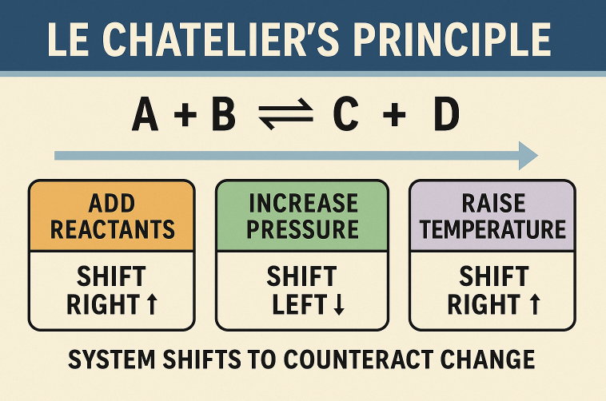

Chemical Equilibrium and Acids-Bases / Ionic Equilibrium
Exam map for this topic
The repeated PYQ buckets are: \(K_c/K_p\) expressions, ICE-table
equilibrium calculations, relation between transformed reactions
and new \(K\), buffer pH, strong acid–strong base pH after mixing,
common-ion effect on solubility, \(K_{sp}\)-based solubility, and
pressure effect on gaseous equilibrium.
Before solving, first tag the question: equilibrium constant
expression / transformed-equation \(K\) / pH / buffer / \(K_{sp}\)
/ common-ion effect / Le Chatelier pressure shift.
Most questions reduce to one fast engine: ICE table, Henderson
equation, \(K_{sp}\) setup, or equilibrium-constant transformation
rule.
Equilibrium constant basics
For a fixed reaction, equilibrium constant depends only on
temperature.
Changing pressure, volume, concentration, or catalyst does not
change the value of \(K\) at the same temperature.
For heterogeneous equilibrium, pure solids and pure liquids are
omitted from the equilibrium expression.
If equilibrium amounts are given in a 1 L vessel, moles and molar
concentrations are numerically equal.
\(K_p\), \(K_c\), and gas-mole change
\(K_p = K_c (RT)^{\Delta n_g}\), where \(\Delta n_g =\) moles of
gaseous products minus moles of gaseous reactants.
For ammonia formation, \(\Delta n_g=-2\), so
\(\dfrac{K_p}{K_c}=\dfrac{1}{(RT)^2}\).
If pressure is increased, equilibrium shifts toward the side with
fewer moles of gas.
If gaseous moles are equal on both sides, pressure change does not
shift equilibrium.
How \(K\) changes when the reaction is changed
If the reaction is reversed, the new equilibrium constant becomes
\(1/K\).
If all coefficients are multiplied by \(n\), the new equilibrium
constant becomes \(K^n\).
If coefficients are divided by \(n\), the new equilibrium constant
becomes \(K^{1/n}\).
If equations are added, their equilibrium constants are
multiplied.
ICE-table solve-fast pattern
Write Initial, Change, and Equilibrium amounts before touching the
\(K\) expression.
Degree of dissociation questions usually start with 1 mole and end
with total moles expressed in \(\alpha\).
When all four species start with the same concentration, symmetry
often simplifies the equilibrium concentrations quickly.
For dissociation like \(PCl_5 \rightleftharpoons PCl_3 + Cl_2\),
if equilibrium \(Cl_2\) is given, that directly fixes the extent
of reaction.
pH and buffer shortcuts
Strong acid–strong base mixture: convert each to moles,
neutralise, then divide leftover \(H^+\) or \(OH^-\) by final
volume.
Chemical equilibrium: dynamic nature and equilibrium law
Chemical equilibrium is a dynamic state in which forward and
reverse reaction rates become equal.
At equilibrium, measurable properties like concentration and
partial pressure become constant, though both reactions continue
microscopically.
For a general reaction, the equilibrium constant is written using
concentrations or partial pressures of products divided by
reactants, each raised to stoichiometric powers.
For pure solids and pure liquids, activity is taken as 1, so they
are omitted from the equilibrium expression.
The value of equilibrium constant depends only on temperature. It
does not change with catalyst, initial concentration, or pressure
at fixed temperature.
\(K_c\), \(K_p\), and gaseous equilibria
For gaseous systems: \[ K_p = K_c (RT)^{\Delta n_g} \] where
\(\Delta n_g\) is moles of gaseous products minus gaseous
reactants.
If \(\Delta n_g = 0\), then \(K_p = K_c\).
If the number of gaseous moles decreases on the product side,
increasing pressure shifts equilibrium toward products.
If gaseous moles are equal on both sides, pressure change does not
shift equilibrium.

Le Chatelier principle and reaction quotient
When concentration, pressure, or temperature is disturbed,
equilibrium shifts in the direction that opposes the disturbance.
At \(25^\circ C\), pure water has \(pH = 7\), but at higher
temperature \(K_w\) changes, so pure water need not have pH
exactly 7.
Pure water remains neutral as long as \([H^+] = [OH^-]\), even if
pH is less than 7 at high temperature.
Strong acid–strong base neutralisation and pH after
mixing
In strong acid–strong base mixture problems, first convert each to
moles.
Then neutralise: \[ H^+ + OH^- \rightarrow H_2O \]
After neutralisation, calculate leftover \(H^+\) or \(OH^-\).
Divide by the final total volume to get concentration, then
calculate pH or pOH.
Always account for dilution if extra water is added later.
Weak acids, weak bases, and buffers
Weak acids and weak bases ionise only partially, so their
strengths are expressed by \(K_a\) and \(K_b\).
A buffer contains a weak acid with its conjugate base, or a weak
base with its conjugate acid.
For an acidic buffer: \[ pH = pK_a +
\log\left(\frac{[\text{salt}]}{[\text{acid}]}\right) \]
If weak acid and conjugate salt are present in equal amounts, then
\(pH = pK_a\).
A buffer is not formed if the weak acid or weak base is completely
neutralised and only salt remains.
Solubility product and molar solubility
For a sparingly soluble salt: \[ \text{salt} \rightleftharpoons
\text{ions} \] and \[ K_{sp} = \text{product of ionic
concentrations} \]
For \(AB\), if molar solubility is \(s\), then \(K_{sp} = s^2\).
For \(AB_2\), \(K_{sp} = s(2s)^2 = 4s^3\).
So always derive the \(K_{sp}\) expression from the dissociation
equation before substituting.
Common-ion effect and solubility suppression
Common-ion effect means the solubility of a sparingly soluble salt
decreases when one of its ions is already present from another
source.
In such cases, the common-ion concentration is often much larger
than the extra contribution from solubility, so it is treated as
approximately constant.
This makes the molar solubility much smaller than in pure water.
How to solve this chapter quickly
If the question is about transformed reactions, change \(K\) using
reciprocal or power rules.
If it is a gaseous-equilibrium question, first check \(\Delta
n_g\) and whether \(K_p\) or \(K_c\) is needed.
If it is a pH question, decide immediately: strong acid/base, weak
acid/base, or buffer.
If it is a solubility question, write the dissociation equation
first, then derive the \(K_{sp}\) expression.
If a common ion is present, do not use the pure-water solubility
shortcut.